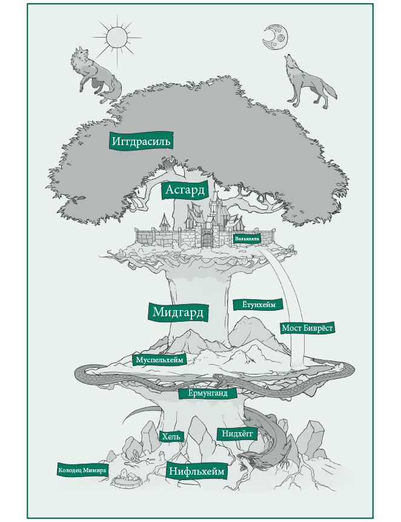
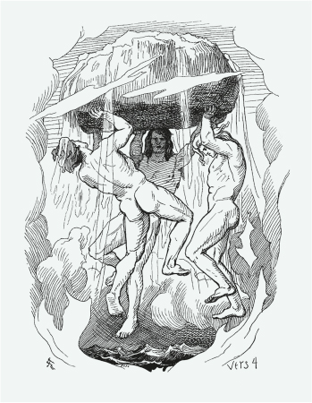
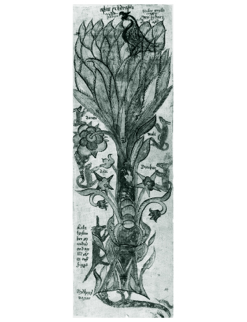

Устройство мира
Девять миров Иггдрасиля
Иггдрасиль — в древнескандинавской
Могучие корни дерева связывают между собой три нижних, три срединных и три верхних мира. Исключением является Утгард — особый мир великанов, который живет сам по себе.
В мифах говорится о том, что у основания ясеня сидят три великие норны — предсказательницы судеб. В легендах об Одине рассказывается, что в поисках мудрости верховный ас провисел на Иггдрасиле девять дней и ночей — и только после этого ему открылись все тайны вселенной.
Мировое дерево Иггдрасиль в скандинавской мифологии является основой всего сущего. Когда наступит день Рагнарёк, оно погибнет — как погибнут и все миры.
Состав Иггдрасиля: есть 3 основные части: ветви, ствол и корни.
Ветви. Верхние миры
Ветви уходят в небо и поддерживают Асгард, царство асов, небесных богов. (Интересно отметить, что ученые считают, что эта часть была добавлена в скандинавские мифы Снорри и не обязательно должна быть частью дохристианской Скандинавии). Первоначально предполагалось, что Асгард существует рядом с Мидгардом. Асгард соединяется с Мидгардом радужным мостом под названием Бифрост. Другие ветви поддерживают Альвхейм, царство эльфов. А третьи поддерживают Ванахейм, еще одно царство эльфов, но, в частности, ванов (раса эльфийских богов). Давайте также отметим, что Ванахейм и царство эльфов когда-то считались частью земли и, следовательно, рядом с Мидгардом, что еще раз указывает на изменения, внесенные в девять царств Стурлусоном в Темные века, когда он запечатлел мифы на бумаге.
1. Асгард — страна скандинавских богов-асов (Один, Тор, Бальдр, Фригг и др.) Большой защищенный мир в котором располагаются чертоги богов и легендарная Вальхалла — дворец павших воинов.
2. Ванахейм — обитель скандинавских богов-ванов (близнецы Фрейр и Фрея, их отец Ньёрд и колдунья Гулльвейг) светлое мирное и спокойное место.
3. Альвхейм или Льесальвхейм — мир светлых альвов или эльфов. Мир необычайной красоты и веселья.
Ствол. Средние миры
Ствол Иггдрасиля представляет средние миры, где мы сейчас находимся, и называется Мидгард. Это царство людей и живых существ.
1. Мидгард — средний мир. Мир смертных, в котором живут люди, располагаются земли, моря и океаны. А опоясывает его мировой змей — Ёрмунганд.
2. Ётунхейм или Утгард — мир скандинавских великанов Ётунов — главных противников богов.
3. Муспельхейм — один из первых двух миров (еще Нильфхейм) — царство вечного огня обитель огненных великанов и их правителя Сурта — пламенного гиганта, который спалит всё живое во время Рагнарёка.
Корни. Нижние миры
В скандинавской космологии есть три основных стержневых корня, которые питают три проявления Священного Колодца:
Один корень оканчивается в Нифльхейме колодцем Хвергельмир; это место, где древний змей/дракон по имени Нидхёгг грызет корень, который, как говорят, в конечном итоге опрокидывает дерево (норниры ежедневно предотвращают это, поливая целебными водами колодцев корень, чтобы он снова стал целым) ). Другой корень заканчивается в Йотунхейме в Мимисбрунре, иначе называемом Колодцем Мимира. И 3-й заканчивается в Урдабрунн, также известном как Колодец Урд (или Вирд).
1. Нильфхейм — один из первых двух миров (еще Муспельхейм) — царство тьмы и холода. Из его холода и огня Муспеля родился Имир — первое живое существо, давшее начало всему живому.
2. Свартальвхейм — подземная страна тёмных альвов или цвергов или гномов или дворфов. Живут там искусные мастера цверги и нет им равных в ремёслах. Именно темные альвы ковали артефакты для богов.
3. Хельхейм — царство мёртвых, сюда попадают все умершие от болезни голода и старости. Правит в нём Хель — богиня смерти.
Как создать мир
В эру раннюю, Имира время,
ни песка, ни моря, ни плеска волн,
не было земли, и неба не было;
лишь щель без травы щерилась бездной.
Пока Бора сыны не подняли почву,
Мидгард стали ставить прекрасный.
Создание Вселенной из ничего – точнее, из Гиннунгагап, что значит «провал, пустота» – непростая задача. От богов-творцов требовались изобретательность и планирование, а также материалы для сотворения мира. Иудейско-христианский Бог создает его актом речи – Словом, Логосом. Когда Он произносит: «Да будет свет», является свет, и слова Его определяют весь дальнейший процесс творения. В других мифах о сотворении мира его порождает женское божество; Небо и Земля сходятся, и все сущее рождается из их союза. В Скандинавии существовало как минимум три мифа о творении; каждый предлагал свой вариант развития событий. Процитированная выше версия рассказывает, как сыновья Бора (Один и его братья Вили и Ве) подняли землю из Гиннунгагап. В следующих строках «Прорицания вёльвы» ростки зеленого лука (особой, волшебной травы) начали поднимать скалистое основание, тем самым сотворив мир.
Предлагая свой вариант, основанный на средневековых научных теориях / представлениях, Снорри объясняет эту историю соединением противоположных начал. Он говорит, что Гиннунгагап – место, лежащее к северу, заполненная льдом пропасть, из которой вытекает река Эливагар – ядовитый поток, быстро застывающий в виде глыб льда. Область огня, Муспелльсхейм, – владения огненного великана Сурта – находится на юге. И когда искры оттуда долетают до льдов Гиннунгагап, те начинают таять, и жизнь, рожденная из союза жара и сухости огня с холодом и влагой льда, обретает форму человека. Его зовут Аургельмир или Имир, и он стал прародителем инеистых (ледяных) великанов. Пока Имир спал, он потел, и из его подмышек появились мужчина и женщина. Его ступни тоже произвели на свет потомство. То были первые инеистые великаны.
Космическая корова Космическая корова Аудумла появилась изо льда, кормила Имира молоком. Она лизала соленый лед и сформировала красивого и сильного человека по имени Бури. Он стал отцом Бора (Бёра), а тот – отцом Одина и его братьев Вили и Ве. Что стало с Аудумлой потом, мы не знаем. Возможно, она отправилась пастись на новой траве, прораставшей на только что созданной земле. Не исключено, что Аудумла произвела на свет потомство: позднейшие легенды упоминают священных коров, крайне важных для дохристианских королей Скандинавии.
Из приведенного отрывка неясно, вызывали ли сыновья Бора землю из глубин силой слова или ныряли за ней и поднимали. Но древнескандинавская традиция предлагает еще один метод творения: через насилие и расчленение. Сыновья Бора наложили руки на первовеликана Имира, убили его и использовали части тела для создания разных элементов мира; так говорится в «Речах Гримнира».
Боги создали землю из Имира тела,
шумящее море из крови его;
из волос его лес, из костей его горы,
из черепа – неба лучистую твердь.
Из ресниц его мудрые боги сумели
Мидгард создать для людей.
Из мозгов грозовые зловещие тучи
появились по воле богов.
Мир, в котором жили люди (Мидгард, или «срединное жилье / поселение»), был создан из тела убитого существа, с применением насилия, в творческом акте одними мужскими божествами. Древнескандинавские мифы изложены с точки зрения асов, причем именно богов, а не богинь; в рассказе о сотворении мира эти боги присваивают себе функцию продолжения рода, плодородие и способность вскармливать, обычно свойственные женщинам. В отличие от последних, боги не создают материал для творения из своих тел, а берут тот, что могут найти. Вплетая агрессию в ткань бытия, в структуру Вселенной, боги утверждают ее как норму для себя и людей. Неизвестно, можно ли считать эту версию истории творения более древней, или она – культурный продукт воинственной эпохи: раннего железного века либо эпохи викингов. Вероятно, очень важно, что самый миролюбивый (хотя тоже чисто мужской) акт творения представлен как подъем земли из бездны в «Прорицании вёльвы» – песни, которая, по современным оценкам, сложилась позже, примерно около 1000 года и несет в себе влияние христианских идей, проникавших тогда в мифологическое мышление северян.
Установление времени
Когда мир был создан и пространство обрело форму и топографию, богам следовало урегулировать движение небесных тел. Солнце, луна и звёзды, кажется, уже существовали, но у них не было постоянного пути по небу. Божества встретились и приняли необходимое решение:
...утру и ночи имя дали
прозвище полдню, полночи тоже
и полнолунью, чтобы луны считать.
Солнце и луна представлялись по-разному. Одна традиция гласит, что они перемещались по небу, спасаясь от прожорливых волков, спешивших по их следу; это, вероятно, аватары космического волка Фенрира, которые должны были догнать и поглотить светила во время Рагнарёка. В других преданиях небесные тела двигались на колесницах, управляемых созданиями по имени День и Ночь, а запряжены в них были кони Скинфакси (Сияющая грива) и Хримфакси (Морозная грива). Теперь, когда время было установлено, боги приготовились к непредвиденным обстоятельствам. Появление прошлого, настоящего и будущего создавало неопределенность и грозило потерей власти. Поскольку великаны обладали лучшей и более долгой памятью о прошлом, чем боги, представлявшие третье и четвертое поколение потомков первичного великана, они ревностно охраняли свое знание. Будущее было неведомо богам; пророчицы и некоторые великаны яснее видели, что грядет, чем большинство асов. Богини Гевьон и Фригг, как говорят, ведали все судьбы, но не раскрывали своих знаний. Задача узнать будущее, выяснить детали Рагнарёка и, возможно, частично изменить их стала навязчивой идеей Одина.
Три норны Под мировым древом Иггдрасиль в чертогах при источнике обитают три норны: Урд, Верданди и Скульд. По преданию, они отделяют от древа тонкие стружки, на которых написаны судьбы людей. Урд знает прошлое; она носит древнее имя, связанное с древнеанглийским «вюрд» («судьба»), от которого произошло современное прилагательное weird («сверхъестественный», «загадочный»). Верданди представляет настоящее, и ее имя – это причастие настоящего времени («Становящаяся»), а Скульд («Должная-быть») обращена в будущее. Стоическое принятие судьбы – определяющая характеристика героя, который должен исполнить свое предназначение.
Установление времени, организованного циклически (чередование времен суток и времен года, а также более долгий цикл творения, гибели-Рагнарёка и возрождения), породило у богов веру в неизбежность судьбы: грядущие события в жизни как отдельных богов, так и целых племен уже существуют, так что их можно предвидеть, но не предотвратить. Сами боги были подвержены судьбе и не могли отменить ее законов.
Мифический ландшафт
Раз пространство и время уже созданы и организованы, пора поговорить о географии скандинавской мифологической вселенной. Центром ее стал Иггдрасиль – мировое древо, великий ясень, корни которого (обычно их насчитывают три) определяют различные части мира.
Тремя корнями тот ясень-дерево
на три страны пророс:
Хель – под первым,
Хримтурсам – второй,
под третьим – род человеков.

Снорри согласен, что миром мертвых, Нифльхеймом (буквально «Туманный мир»), управляет Хель, дочь Локи; он расположен под одним из корней, а другой спускается в бывшую пропасть Гиннунгагап, где находится ледяное царство инеистых великанов; однако он перемещает мир людей из-под корней ближе к миру богов – Асгарду. Мир людей – Мидгард – занимает срединное положение; это название отразилось и в древнеанглийском Middan-geard (Миддан-йеард) – «Земля». Это слово обозначало все пространство между небесами и адом, с точки зрения христианства (можно вспомнить для сравнения и Средиземье Джона Толкина). Одни миры лежат внизу, а другие располагаются над землей, в том числе и Ётунхейм («Страна великанов»), которая находится на гористом востоке. Асгард в этой модели представлен как центр мироздания; огромный чертог Одина, Вальхалла, составляет его часть, занимая место прямо под кроной Иггдрасиля. На крыше чертога стоит коза Хейдрун, которая питается листьями великого ясеня. Из ее вымени течет мед, который пьют обитатели Вальхаллы – эйнхерии, героически погибшие земные воины.
Хейдрун – не единственное животное, связанное с Иггдрасилем. Само имя дерева означает «Скакун Игга/Ужасного», что указывает на легенду о жертвоприношении Одина. Германцы считали, что эта метафора описывает виселицу как коня, на котором скачет осужденный на казнь. В кроне дерева пасутся четыре оленя, поедающие молодые листочки. Ниже змеи грызут корни. Орел сидит на вершине, а между его глаз примостился ястреб. Белка по имени Рататёск («Вострозубка») бегает вверх-вниз по стволу, перенося новости между мирами. Из всех змеев самый грозный – дракон Нидхёгг («Пожиратель»). Иногда он совершает набеги на другие мифические миры, сея там ужас. Все эти существа зависят от великого древа и символизируют действие времени как разрушителя, поскольку буквально съедают ось мира, вокруг которой все вращается. Олени ассоциируются с благородством, а коза питает богов, но даже они вредят древу не меньше, чем злобные змеи.
Крона Иггдрасиля также укрывала колодец Мимира (см. ниже), в котором, судя по всему, находилась вода судьбы. По стволу стекали белоснежные струи глины – видимо, на Хеймдалля, не случайно же Локи посмеивался над его «белой спиной». В колодце Мимира находился и слух Хеймдалля, а также глаз Одина, отданный в обмен на возможность выпить этой воды. Два главных органа чувств, пожертвованных богами (третья жертва, рука Тюра, откушенная Фенриром, невосстановима), не лишают их способности чувствовать: возможно, отданное хранит таинственную связь с бывшим владельцем. Логика жертвенного обмена – нечто отдано во имя другого, лучшего, полученного взамен – предполагает, что острый слух Хеймдалля и прозорливость Одина дарованы им живой водой колодца Мимира.
Сверхъестественные девы: норны и дисы С судьбой ассоциировалось несколько сверхъестественных женских персонажей. Норны выполняли разные функции; одни были враждебными, другие помогали в рождении детей, третьи управляли судьбами новорожденных. Герои часто говорят о «суде норн», когда на пороге смерти осознают приближение последнего часа. Дисы – коллективное название группы духов, вероятно женских предков, которые несут смерть королям и героям. В одном исландском предании молодого человека предупреждают, чтобы он в определенную ночь не ходил за порог, но он нарушает запрет. В небе он видит группу из девяти женщин в темных одеждах и девяти в белых: первые символизируют старые верования, вторые – христианство. Прежде чем юноша успевает вернуться в дом, чтобы рассказать об увиденном, на него нападают женщины в темном и убивают, едва он успевает поделиться увиденным с людьми. Древнескандинавский рассказчик называет женщин в темном дисами – духами семьи и земли, власть которых ослабла с приходом христианства.
Помимо Вальхаллы и ее окрестностей, каждое божество имеет свои чертоги, где оно властвует, как вожди эпохи викингов в своих палатах, остатки которых найдены археологами в Гамла Упсале (Старой Упсале) в Швеции, в датской Лейре и которые можно увидеть в недавно реконструированной усадьбе Эрика Рыжего в гренландском Браттахлиде. Один перечисляет двенадцать таких чертогов в поэме «Речи Гримнира», и каждый принадлежал одному богу. Названия их связаны с сиянием, роскошью, весельем или конкретными атрибутами бога: например, Долина тисов бога-лучника Улля, поскольку именно из тиса создавались лучшие луки. Рассказ Одина включает любимые занятия богов, восседающих в своих чертогах: пиры, суды, решение споров, верховая езда и – вероятно, самое частое – выбор воинов, подобно тому как набирают новых бойцов в дружину вождя.
За пределами страны, где жили великаны, простирался океан. На самом дальнем его краю, обозначавшем границы известного мира, лежал змей Мидгарда Ёрмунганд («Великанский посох») в ожидании битвы с Тором. В глубине океана обитал Эгир, повелитель моря (то ли великан, то ли бог), с женой Ран, чье имя означало «грабеж». Она охотилась за людьми, захватывала их в сети и утаскивала на дно. Ее дочери от Эгира – волны; иногда они спокойно покачивают головами, но порой становятся опасными и крушат корабли.
Жена и дочери Эгира угрожают мореплавателям, так что смерть на море имеет женскую природу. Эти существа, как и принятые человеческой цивилизацией валькирии и дисы, норны и даже сама Хель, повелительница царства мертвых, прямо связаны со Смертью. Та представлялась как жаждущая женщина, которая принимает умирающего мужчину в качестве возлюбленного в ином мире, желая удержать его в своих роковых объятиях. Женщины дарят жизнь, и они же ее отнимают, с распростертыми объятиями поджидая обреченных на смерть. Великий исландский поэт X века Эгиль Скаллагримссон завершил трагическую поэму «Утрата сыновей» такими словами:
Тяжело мне теперь,
Сестра врага Одина [= Фенрир; сестра Фенрира – Хель]
Стоит на мысу;
И все же доволен, по доброй воле.
Без боязни я жду Хель.
Создание культуры
Мы оставили богов в тот момент, когда мир был едва создан, День и Ночь только оформились и впервые двинулись небесными путями. Но оставалось еще много работы, чтобы зазеленели поля, на которых богам было бы комфортно жить:
Сходились асы на Идавеллир,
храмы, хоромы хорошие строили;
в кузне богами богатство ковалось,
создавали из руд орудия разные.
Имена гномов у Толкина Толкин взял имена гномов в «Хоббите» из «Прорицания вёльвы». Двалин, Ойн и Глойн, Фили и Кили, Дори, Нори и Ори, Бифур, Бофур и Бомбур – персонажи скандинавских преданий, и их тезки становятся гостями Бильбо. Их вожак Торин Дубощит может похвалиться двумя «двойниками» из мифов: Дурин и Трейн – тоже традиционные скандинавские имена подземных жителей, одних из прародителей карликов. Имя Гэндальф также встречается среди имен карликов в скандинавской поэзии. Оно означает «альв посоха», но Толкин решил улучшить его, дополнив эпитетом на принятый у волшебников манер: Гэндальф Серый.
Когда места их будущего почитания были созданы, боги начали делать разные предметы, в частности множество вещей из металлов. Рождалась цивилизация, вероятно, как в эпоху викингов в поселениях вроде Бирки в Швеции или Хедебю (ныне Германия), с культовыми центрами и мастерскими. Также асы создавали для себя предметы роскоши. Закончив труд, они отдыхали:
В тавлей с радостью в траве играли,
все у них в залах из золота было;
пока трое не прибыли – турсов девы,
в приют богов из Ётунхейма.
Запомните это упоминание тавлея (любая игра на настольной доске): позже мы увидим, что это важно. Ключевой и загадочный момент здесь – «пока трое не прибыли». Именно на этом этапе боги решают создать карликов, вероятно, чтобы у них не заканчивалось золото. Поскольку карлики (гномы) были существами подземными, они обладали особым даром находить, обрабатывать и хранить золото, и за их изделия боги готовы были щедро платить. Но какое отношение девы-великанши имеют к опасности исчерпания золота? Может, есть риск проиграть им сокровища в тавлей? Или кто-то в гневе опрокинул доску и рассыпал, потерял фигуры? Великанша Скади приходит в Асгард и жаждет компенсации за смерть своего отца Тьяци. Девы-великанши тоже могли явиться с требованием удовлетворения за убийство их предка Имира. Этого мы точно не знаем, но одно ясно наверняка: с их прибытием у богов заканчивается золото.
Карликов создали быстро; Снорри рассказывает, что они зародились в земле, как черви размножаются в плоти (чудовищный образ). Он приводит и своеобразный список имен карликов, взятый из «Прорицания вёльвы».
Карлики жили либо под землей, либо в горах, занимались ковкой металла и изготовлением прекрасных вещей. Многие из самых ценных сокровищ богов были созданы ими: складной корабль Фрейра Скидбладнир; золотые локоны Сив, которые заменили натуральные волосы, украденные Локи; копье Одина Гунгнир. Все это сделано карликами-братьями, сыновьями Ивальди. Карлик Брокк, вовлеченный в соревнование с братьями хитростью Локи, также изготовил три сокровища, потребовав в уплату за победу голову озорного бога. Ради этого они с братом создали вепря Гуллинбурсти с золотой щетиной, на котором ездит Фрейр (об интересах ванов тоже позаботились), золотое кольцо Драупнир, которое каждую девятую ночь истекает («драуп», что означает «капля») новым подобием себя (это дар Одину), а также молот Тора Мьёлльнир. Локи изо всех сил старался помешать Брокку, превратившись в назойливую кусачую муху – конского овода – и нападая на мастера в процессе работы. Однако тому удалось выдержать испытание; он немного ошибся лишь в самом конце, при работе над Мьёлльниром. Из-за этого ручка молота оказалась коротковата. Однако боги сочли Мьёлльнир, способный поражать великанов, столь великолепным шедевром, что Брокку присудили победу, и Локи должен был отдать ему свою голову. Хитроумный бог нашел способ избежать этого, потребовав, чтобы Брокк забрал голову, не задев шею, которая ему не принадлежит. Даже карлик был не настолько умел, чтобы отделить голову от тела, не коснувшись шеи, поэтому Локи уцелел. Но рот бога был зашит во избежание споров и словесных трюков, и с тех пор у Локи навсегда осталась кривоватая линия рта. Этот образ вполне соответствовал тому, кого называли рэгьянди годанна («оскорбитель богов»).
Позднее сказание, датированное XIV веком, упоминает Фрейю как спутницу Одина, пожелавшую получить изумительное сокровище Брисингамен (ожерелье Брисингов). Как-то Фрейя проходила мимо скал, где жили карлики, и заметила, что дверь открыта. Она вошла в их дом. Там она увидела четырех карликов, в том числе Двалина (он известен и по другим источникам), работавших над великолепным золотым ожерельем. Сказитель сообщает: «Фрейя была очарована видом ожерелья, а карлики – обликом Фрейи». Богиня предложила им много золота и серебра в обмен на Брисингамен, но те выставили свою цену: Фрейя должна провести ночь с каждым из них. Богиня неохотно согласилась. После четырех ночей она получила желанную драгоценность.

Один потребовал, чтобы Локи украл для него сокровище. Тот превратился в овода и проник в недоступную спальню Фрейи. Она спала в ожерелье, застежка была под ней. Тогда Локи превратился в блоху и стал кусать богиню, вынуждая ее повернуться. Фрейя начала ворочаться во сне – и Локи сумел украсть ожерелье, а затем передал его Одину. Когда Фрейя пришла к Одину жаловаться на кражу и взлом ее тщательно запертой спальни (тут явно сексуальная метафора), Один согласился вернуть драгоценность при одном условии: Фрейя должна спровоцировать вечный конфликт между двумя армиями, традиционно называемый Хьяднингавиг (битва Хьяднингов), о которых пойдет речь в главе 5. Фрейя согласилась и получила назад свое ожерелье. Это позднее сказание включает элементы двух более древних: о краже Брисингамена Локи и о битве Хьяднингов, но в новой, христианизированной версии. Конфликт должен продлиться до Рагнарёка, поскольку каждую ночь воскресает Хильд, женщина, имя которой означает «битва». Однако в поздней версии Один предсказывает, что сражения будут продолжаться, пока христианский король Олаф Трюгвассон из Норвегии не прибудет на Оркнейские острова и не положит конец битве.